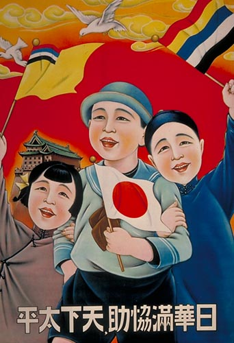
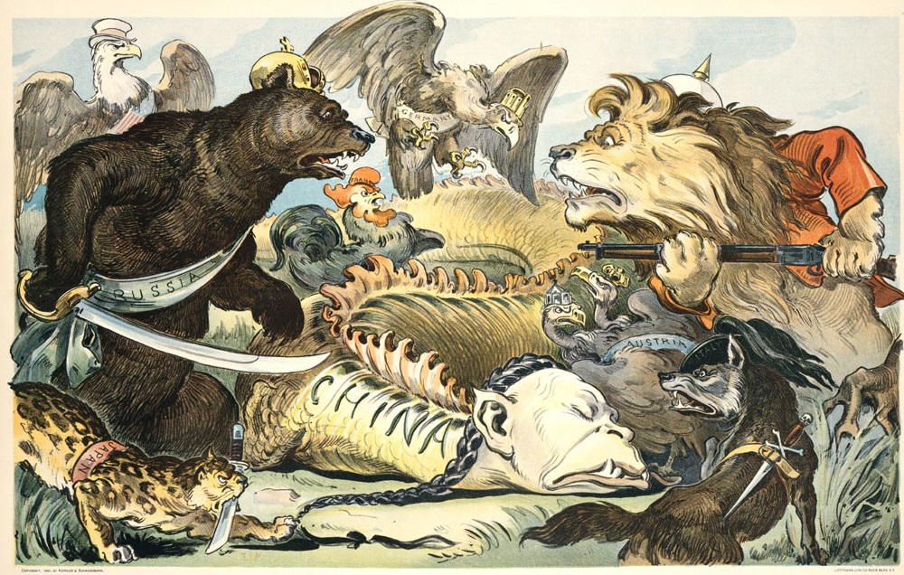
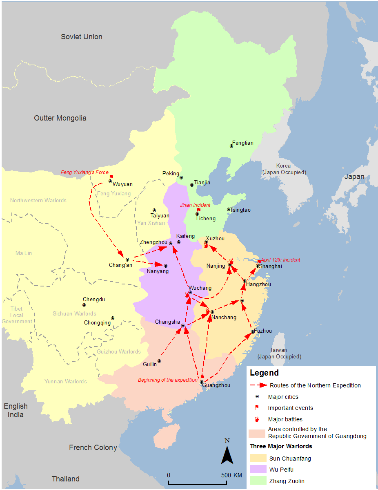
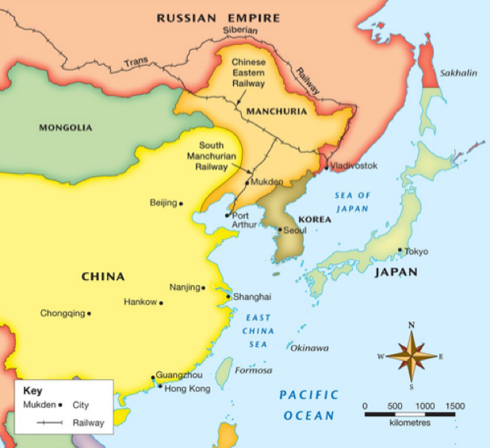
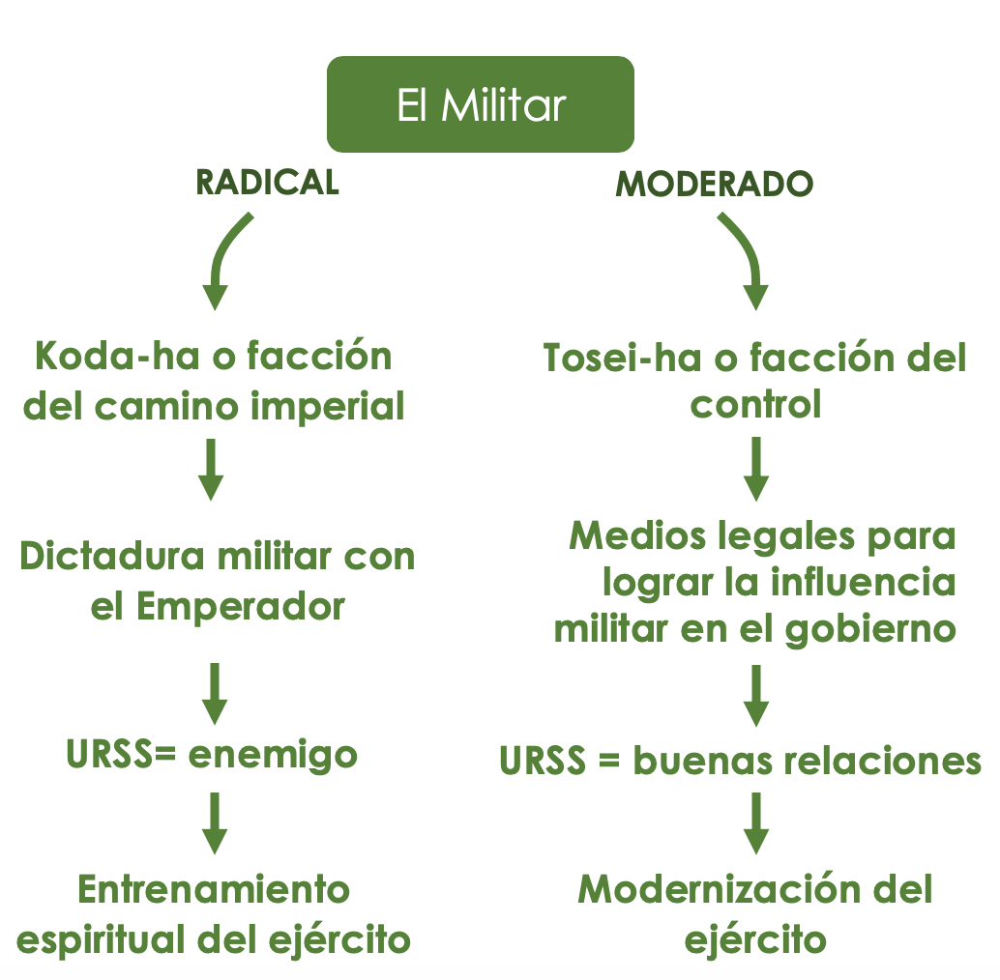
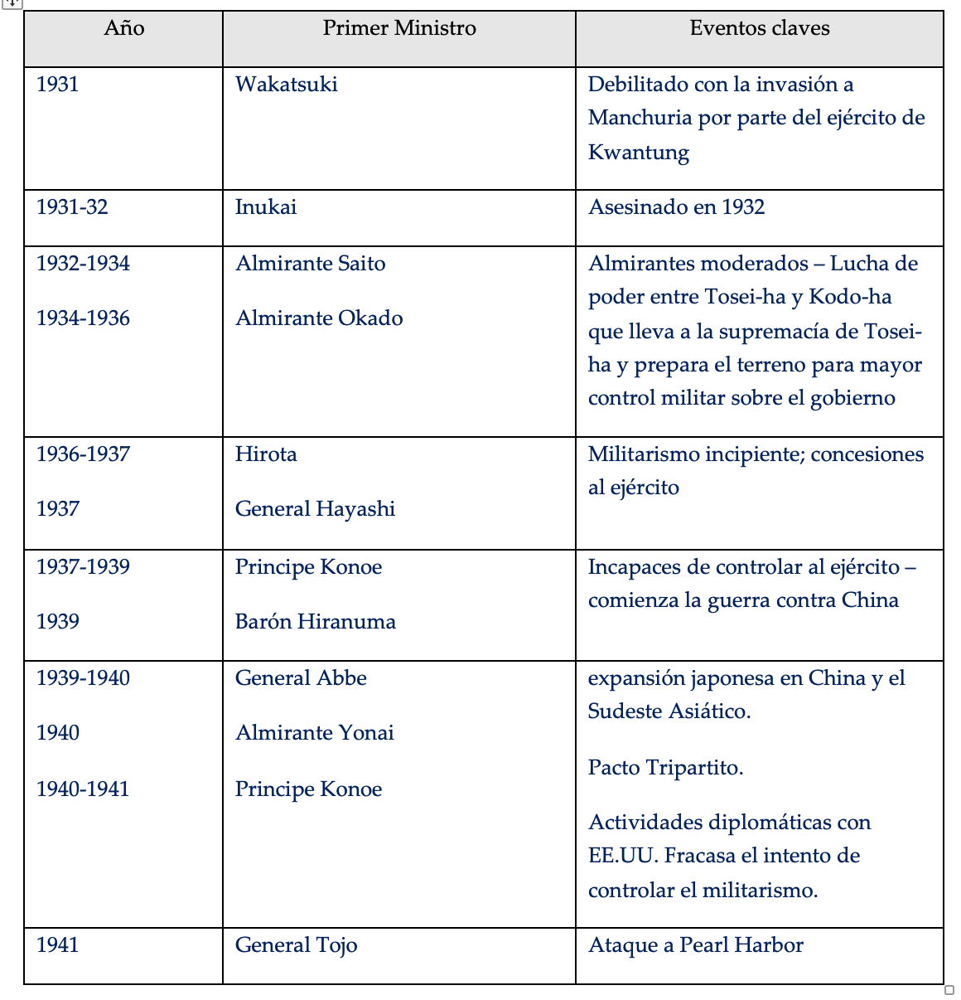
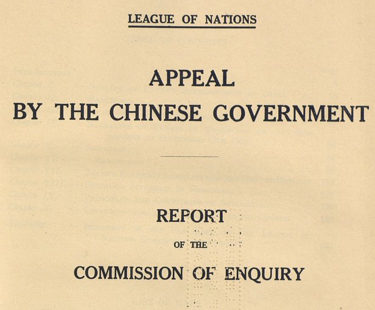

IB Docs (2) Team
IB Docs (2) Team

3. La expansión japonesa en Asia oriental (1931-1941)

El crecimiento del nacionalismo y el militarismo japonés después de 1931 y la consiguiente expansión del Japón en el Asia oriental condujeron a la guerra con China y al conflicto con Occidente. Esto culminó con el ataque japonés a Pearl Harbor en 1941, un evento que transformó la guerra europea en una guerra global.
El video Road to War: Japan ofrece un excelente panorama de los eventos que llevaron a Pearl Harbor y que serán tratados en las secciones a lo largo de esta unidad. Para las preguntas sobre este video, ve esta página: 4. La expansión japonesa en Asia Oriental: Videos y actividades.
Este tema también se trata en Causas de la Segunda Guerra Mundial en esta página: 2. Segunda Guerra Mundial - Causas Parte II.
Preguntas orientadoras:
¿Cuáles fueron los orígenes del militarismo y el nacionalismo japonés?
¿Cuál fue el impacto de la Gran Depresión en Japón?
¿Cómo impactaron los eventos en China en el militarismo y el nacionalismo?
¿Qué importancia tuvieron los factores económicos para explicar la política exterior expansionista de Japón en los años 30?
¿Por qué Japón descendió al "valle oscuro"?
¿Cuál fue el impacto del nacionalismo y el militarismo en la política exterior de Japón en los años 30?
¿Cuál fue la respuesta de la comunidad internacional a las acciones de Japón?
¿Por qué aumentó la tensión con Occidente después de 1938?
¿Por qué Japón atacó Pearl Harbor en 1941?
1. ¿Cuáles fueron los orígenes del militarismo y el nacionalismo japonés?
Actividad inicial

Haz clic en el ojo para obtener algunas pistas:
Considera:
- qué países están representados y por qué animales - ¡siempre es útil saberlo!
- lo que el caricaturista está diciendo sobre China
- qué países están en conflicto por China
- cuales es el papel de los Estados Unidos
- qué dice el dibujante sobre Japón
Aunque este tema comienza en realidad en 1931, es importante observar los acontecimientos en Japón antes de esta época para entender por qué actúa de la forma en que lo hace en la década del 30. La primera tarea comienza en 1900: si quieres ir más atrás para entender la modernización de Japón antes de esta época, mira el video sobre el Japón Meiji en esta página: 9. Japón 1920 a 1990: Videos
Tarea Uno
ENFOQUES DE APRENDIZAJE: Habilidades de pensamiento
- Mira los primeros 25 minutos de este video que explora el imperialismo japonés desde 1900 a través de imágenes de archivo.
Responde a estas preguntas mientras ves el video:
- ¿Cuál fue el impacto de la guerra ruso-japonesa de 1905?
- ¿Cuáles fueron los objetivos de la intervención japonesa en Siberia?
- ¿Qué acciones emprendió Japón en Corea después de 1924?
- Toma nota de las prácticas tradicionales que existían en Japón en los años 20 y de las influencias "modernas" u "occidentales". ¿Por qué había conflicto entre lo moderno y lo tradicional?
- ¿Por qué comenzó a desarrollarse el conflicto con los EE. UU.?
- ¿Qué evidencia se muestra del creciente nacionalismo?
- ¿Qué pruebas hay de la creciente independencia del ejército?
Tarea Dos
Habilidades de pensamiento e investigación
Trabajen de a dos o tres. Investiguen el impacto de la Primera Guerra Mundial sobre Japón. Cada grupo elegirá uno de los temas propuestos más abajo
Para ello, deben tener en cuenta:
- Las razones por las cuales Japón entró a la guerra
- Las acciones militares japonesas
- Lo que Japón ganó por su participación en la guerra
- El impacto de la intervención japonesa en Siberia para Japón
Una vez que cada grupo haya realizado su investigación, deberá informar al resto de la clase y responder a sus preguntas.
2. ¿Cuál fue el impacto de la Gran Depresión en Japón?
Tarea Uno
ENFOQUES DE APRENDIZAJE: Habilidades de pensamiento
Mira los dos minutos que siguen al minuto 24 con 30 segundos de este video
De acuerdo con los puntos de vista japoneses que se muestran aquí:
- ¿Qué impacto tiene la depresión económica en la opinión de la gente sobre el sistema existente?
- ¿Cómo impactó la depresión en la vida de los japoneses?
Tarea Dos
ENFOQUES DE APRENDIZAJE: Habilidades de pensamiento
Lea el siguiente relato de la Gran Depresión.
a) ¿Cuál fue, según esta fuente, el impacto de la Gran Depresión en Japón?
b) ¿De qué manera la Depresión amenazó el "liberalismo" de los años 20?
c) ¿Por qué el ascenso del fascismo en Europa fue significativo para muchos japoneses?
Dado que Japón dependía casi totalmente del comercio exterior, los efectos del colapso del mercado mundial fueron devastadores. Los granjeros japoneses que en los años veinte se dedicaban a la cría de gusanos de seda estaban ahora arruinados por el colapso del mercado americano de la seda. Los campesinos estaban profundamente endeudados y millones de trabajadores industriales quedaron sin trabajo. Muchos estaban resentidos con el Zaibatsu, que tenía un dominio sobre las finanzas y que había aplastado la mayoría de las pequeñas industrias para 1925 Los estudiantes japoneses también estaban resentidos por el hecho de que no tenían ninguna posibilidad de avanzar en un gobierno controlado por las élites políticas y financieras.
Mientras tanto, los políticos y los Zaibatsu también eran despreciados por el ejército que los culpaba de la depresión. De hecho, la depresión puso en duda la validez del orden económico internacional que, a su vez, puso en duda la credibilidad de las naciones democráticas y del gobierno parlamentario de Japón. A muchos les pareció significativo que Alemania, el más admirado de los Estados occidentales y el modelo constitucional del Japón, le hubiera dado la espalda a la democracia y que ahora buscara políticas autoritarias y militaristas.
Mientras tanto, en Manchuria se confirmaban las opiniones radicales de los oficiales del ejército que veían la conquista de los recursos y mercados de Asia como un remedio para el caos causado por la Depresión.
Tarea Tres
ENFOQUES DE APRENDIZAJE: Habilidades de pensamiento
Lea este relato contemporáneo del impacto de la depresión económica de 1929
¿De qué manera la crisis económica ha fomentado el crecimiento del militarismo?
En este clima de desesperación económica y decadencia política, el militarismo surgió como un ejemplo aparentemente brillante y puro del verdadero espíritu de la nación. Ayudados en parte por una década de adoctrinamiento, los militares encontraron su apoyo más ferviente en las zonas rurales más desfavorecidas. Para muchos jóvenes rurales, el servicio militar era su escape de la pobreza y la humillación. Los líderes militares y organizaciones como la Asociación de Reservistas Imperiales promovieron la idea de que los "soldados eran los brazos y piernas del imperio" y que eran mejores que los civiles. Se decía que los jóvenes campesinos que luchaban por sobrevivir "consideran que entrar en el ejército para convertirse en una clase privada superior es el mayor honor que se puede conseguir".
3. ¿Cómo impactaron los eventos en China en el militarismo y el nacionalismo?

el área en verde represents el territories controlado por el señor de la guerra Zhang Zuolin
Reischauer y Craig también señalan el impacto del creciente nacionalismo en China de entonces como importante para el creciente militarismo. Antes de la década de 1920, China estaba desunida y no tenia un gobierno fuerte. El mismo se encontraba dominado por los señores de la guerra. Esto había permitido a Japón poner pie en Manchuria. Sin embargo, en la década de 1920 el Partido Nacionalista de China, el Guomindang (GMD), dirigido por Jiang Jieshi, comenzó una campaña de unificación nacional. Esto incluyó reclamos para poner fin a los tratados inequitativos que China había firmado con grandes potencias, incluido Japón, Con el nuevo partido comunista, el PCC, Jiang lanzó una Expedición al Norte para consolidar el control del gobierno y destruir el poder de los señores de la guerra. Esto fue visto con preocupación por el gobierno japonés. Los japoneses habían apoyado al señor de la guerra en Manchuria, Zhang Zuolin. Sin embargo, Zhang se había vuelto muy poderoso y se estaba expandiendo fuera de Manchuria, lo que lo convirtió en un objetivo para Jiang. Si Jiang derrotaba a Zhang, podría terminar con los intereses especiales de Japón en Manchuria. El gobierno japonés tenía la intención de hacer que Zhang se retirara a Manchuria para que Jiang lo dejara en paz y Japón pudiera permanecer en Manchuria. Sin embargo, el ejército decidió asesinar a Zhang y también forzar a la Expedición del Norte de Jiang a detenerse en Jinan (ver mapa arriba). Cuando el primer ministro japonés Tanaka trató de imponer la disciplina en el ejército por orden del Emperador, el Estado Mayor se negó a actuar. Tanaka se vio obligado a renunciar en 1929, lo que puso de manifiesto que el ejército podía ignorar al gobierno con impunidad.
Tarea Uno
ENFOQUES DE APRENDIZAJE: Habilidades de pensamiento e investigación
Mapa mental sobre los orígenes del nacionalismo y militarismo japonés
El objetivo es crear una infografía para mostrar el estado de Japón en 1931. Deben hacerlo colorido e informativo; incluir mapas/caricaturas o cualquier otro recurso visual que crean apropiado.
Utiliza el video anterior como punto de partida, aunque también tendrás que hacer una investigación adicional.
Tu infografía debería mostrar lo siguiente:
- Las preocupaciones estratégicas y económicas de Japón en 1931
- La relación con Occidente
- La situación política de Japón
- La relación de Japón con China
- El papel del ejército
Asegúrate de considerar:
- El impacto de la primera guerra sino-japonesa de 1894
- Impacto de la guerra rusojaponesa de 1904 - 05
- El impacto de la Primera Guerra Mundial
- La Conferencia de Washington
- La política de EE. UU. sobre la inmigración japonesa
- El impacto de la caída de Wall Street
- La inestabilidad política de China
Tarea Dos
ENFOQUES DE APRENDIZAJE: Habilidades de pensamiento
Habiendo completado tu infografía, considera las siguientes preguntas:
¿Cuáles eran las principales características de Japón en 1931?
¿Qué palabras utilizarías para describir el país en este momento?
¿Qué factores tuvieron la mayor influencia en Japón antes de 1931?
4.Qué importancia tuvieron los factores económicos para explicar la política exterior expansionista de Japón en los años 30?

¿Cuál es el mensaje de este mapa en relación con la importancia de Manchuria para Japón?
Actividad de inicio
“En este clima de desesperación económica y decadencia política, el ejército surgió como un ejemplo aparentemente brillante y puro del verdadero espíritu de la nación. Ayudados en parte por décadas de adoctrinamiento, los militares encontraron su más ferviente apoyo en las zonas rurales más desfavorecidas". (Una observación contemporánea, 1929)
¿Qué razones da este observador para explicar el crecimiento del prestigio de los militares a finales de los años 20?
Los factores económicos son cruciales para explicar la política exterior expansionista de Japón a finales del siglo XIX y principios del XX. Un papel fundamental lo juega la proximidad de Manchuria y sus recursos económicos.
Tarea Uno
ENFOQUES DE APRENDIZAJE: Habilidades de pensamiento
Según este extracto de un libro de texto reciente, ¿por qué Manchuria era cada vez más importante para Japón en la década del 30?
Las partes orientales de Manchuria y la mayor parte de la península de Corea ya habían estado bajo el control del imperio japonés durante tres décadas después de la primera guerra sino-japonesa de 1895. Japón había obtenido el control de Port Arthur, así como el control de derechos ferroviarios y minerales cuando derrotó a Rusia en la Guerra ruso-japonesa en 1904-05. Con el crecimiento del nacionalismo en Japón, y también con la crisis económica que comenzó en 1930 tras la caída de Wall Street, el interés por Manchuria como "un salvavidas" para Japón. La riqueza de sus recursos (carbón, hierro y madera) y su potencial como mercado para los bienes japoneses, fueron cada vez más atractivos para un Japón que sufría las privaciones de la depresión. Además, podía proporcionar espacio vital para un Japón sobrepoblado. El diplomático Yosuke Matsuoko describió a Manchuria como un "salvavidas" y "nuestro único medio de supervivencia".
La posición económica de Japón en Manchuria era crucial, pero era inestable debido a la dependencia de los señores de la guerra y los gobernadores locales
Los grandes grupos industriales - Ziabatsus estaban interesados en estabilizar la situación en Manchuria, al igual que lo estaba el Ejército de Kwantung. Así, un grupo de oficiales urdió un complot para apoderarse de Manchuria definitivamente. Esto iba en contra de las políticas de su propio gobierno que todavía se centraba en principios pacíficos para mantener la posición del Japón en el noreste de China. El Primer Ministro Wakatsuki fue advertido del plan por los oficiales del cónsul japonés en Manchuria. Informó al emperador quien ordenó al ministro de guerra, el general Minami, que frenara al ejército. Sin embargo, la carta de Minami al comandante del Ejército de Kwantung se retrasó intencionadamente y el plan se ejecutó antes de que pudiera ser detenido y en directa contradicción con los deseos del emperador.
Tarea Dos
ENFOQUES DE APRENDIZAJE: Habilidades de pensamiento e investigación
Investiga acerca de Manchuria para responder a las siguientes preguntas.
Para la pregunta 4 ver el video "The Road to War: Japan" a partir del minuto 14. Esto se puede encontrar aquí: 4. La expansión japonesa en Asia Oriental: Videos y actividades
- Identifica las razones por las que Manchuria fue vista como un "salvavidas" para China. Considera los factores económicos y estratégicos. Puede que desees hacer anotaciones en un mapa de la región para ayudar a explicar tu respuesta.
- ¿Cuál fue la importancia de la crisis económica que siguió a la caída de Wall Street en los EE. UU. para el interés de Japón en Manchuria?
- ¿Cuál fue el significado de la Expedición del Norte en China para los planes de Japón en Manchuria?
- Explica qué sucedió durante el incidente de Mukden de 1931
Tarea Tres
ENFOQUES DE APRENDIZAJE: Habilidades de pensamiento y comunicación
En clase, discutan por qué creen que el historiador Kenneth Pyle ha descrito la crisis de Manchuria de 1931 como "un punto de inflexión" para Japón.
Tarea Cuatro
ENFOQUES DE APRENDIZAJE: Habilidades de pensamiento
Lee el siguiente extracto de un libro de texto moderno:
Los líderes de Japón justificaron sus acciones en Manchuria enfatizando la necesidad de seguridad nacional, de materias primas y de territorio. La crisis económica mundial de finales de los años 20 y principios de los 30, junto con la creciente tensión internacional, agregó peso a sus reivindicaciones. Manchuria, argumentaban, permitiría a Japón sobrellevar cualquier bloqueo económico de las naciones hostiles, daría espacio a la creciente población de Japón y también permitiría a Japón mantener su estatus de gran potencia.
De acuerdo con esta fuente, ¿por qué era necesario que Japón tomara Manchuria
5. ¿Por qué Japón descendió al "valle oscuro"?
El tema dominante de los años 30 en Japón fue la creciente solidez y poder del ejército.
Richard Storry
Continúa viendo el video Road to War: Japan: 4. Japanese expansion in East Asia: Videos and activities
Comienza a los 20 minutos para ver el acrecentamiento del militarismo en la política interna
Las acciones populares de los militares en Manchuria, que eran vistos como "héroes" en Japón, socavaron el gobierno que estaba dividido sobre qué hacer. A finales de 1931, el gobierno del partido MInseito de Wakatsuki dimitió.
El ejército aumentó su influencia sobre el gobierno; sin embargo, también hubo divisiones dentro del propio ejército que desestabilizaron aún más la situación política japonesa.
Estos dos grupos eran la facción de Koda-ha o Vía Imperial y la facción de Tosei-ha o Control. Sus diferentes puntos de vista se resumen a continuación. Ambos eran imperialistas y ambos querían la expansión japonesa; sin embargo el Koda-ha era el más radical de los dos. El historiador Richard Storry explica que Kodo "... puede ser resumido, más bien inadecuadamente tal vez como el ideal de perfecta lealtad y rendición al Emperador. Era un ideal que abrazaba la creencia de que, si todo el poder político y económico se ponía en manos del Emperador, todas las dificultades nacionales y extranjeras serían superadas" (Fascism in Japan, History Today, 1956).
Tosei-ha estaba igualmente decidido a tomar el control de la política nacional - pero estaba más preparado para cooperar con los grandes grupos de negocios y sus partidos políticos afiliados en la Dieta. "Los líderes de la Tosei-ha tenían un genuino horror por las ideas radicales apreciadas por muchos de los oficiales subalternos... en términos generales la Tosei-ha era más conservadora y cautelosa que la Kodo-ha". (Storry)
Tres grandes complots de asesinatos, parte de esta lucha interna por el poder, desestabilizaron el gobierno entre 1932 y 1936.

Tarea Uno
ENFOQUES DE APRENDIZAJE: Habilidades de pensamiento
Por parejas, considere las implicaciones para Japón y su política exterior de cada una de las dos facciones del ejército que se muestran en el diagrama anterior.
El sucesor de Wakatsuki como Primer Ministro, Inukai (líder del Seiyukai) fue asesinado en mayo de 1932 por ultranacionalistas; esto fue un grave golpe para los partidos políticos. Como indica el cuadro siguiente, se produjo una lucha por el poder entre dos facciones del ejército. En 1936 la facción de Koda-ha dio un golpe de estado en Tokio. Se declaró la ley marcial y el golpe fue derrotado. Sin embargo, resultó en un fortalecimiento del control del ejército, ahora bajo la facción de Tosei-ha.
El nuevo Primer Ministro Hirota Koki era débil e hizo concesiones al ejército, incluyendo consentir en implementar una fuerte política exterior. En mayo de 1936, acordó que los ministros del ejército y la marina debían ser oficiales en servicio. Más tarde aceptó un programa de siete puntos del ejército, que básicamente entregaba el control del gobierno a los militares. La guerra chino-japonesa completó efectivamente el control militar sobre el gobierno. En 1940 la Asociación de Asistencia al Gobierno Imperial reemplazó a los partidos políticos. Poco antes de Pearl Harbor, en octubre de 1941, el primer ministro, el príncipe Konoe, dimitió y fue sustituido por el general Tojo.

Los acontecimientos nacionales e internacionales están inextricablemente vinculados durante este período. La siguiente tarea ayudará a comprender los vínculos más claramente.
Tarea dos
ENFOQUES DE APRENDIZAJE: Habilidades de autogestión
Elabora una línea de tiempo que cubra los años 1920 a 1940.
Por encima de esta línea, anota los eventos políticos claves dentro de Japón.
Añade cualquier evento internacional que conozcas por debajo de la línea (puedes continuar añadiendo a esta línea de tiempo después de haber hecho la sección que sigue)
6: ¿Cuál fue el impacto del nacionalismo y el militarismo en la política exterior de Japón en los años 30?
Actividad inicial
Mira esta caricatura de David Low de enero de 1938 .
¿Cuál es el mensaje de esta caricatura?
Haz clic en el ojo para obtener algunas ideas sobre los puntos que deberías considerar en tu respuesta.
Considera las siguientes preguntas:
¿Quiénes están representados por los diferentes personajes y cuál es el significado de su posición en la línea?
¿Por qué el personaje del frente se muestra persiguiendo una mariposa?
¿Cuál es el significado de la leyenda de la caricatura?
Con el fracaso de los políticos japoneses para hacer frente al Ejército de Kwantung, y debido a la popularidad de las acciones del mismo en Japón, la conquista de Manchuria se convirtió en política de estado. Una vez que Manchuria fue conquistada, se declaró el estado independiente de Manchukuo bajo el último emperador de China, PuYi. Sin embargo, el ejército fue más allá de Manchuria y avanzó hasta Jehol. En mayo de 1933 se firmó la "Tregua de Tanggu" entre el ejército de Kwantung y los comandantes nacionalistas chinos. Se reconoció el status quo (estado actual) y, además, China se vio obligada a reconocer una zona desmilitarizada entre Beijing y la Gran Muralla. (La capacidad de resistencia china quedó paralizada por la guerra civil; de hecho, Jiang Jieshi respondió a la agresión japonesa con un ataque a los comunistas de Mao en 1934).
Así pues, Japón había ejercido una presión constante para aumentar su poder e influencia en el norte de China incluso antes de 1937. Para entonces, el Ejército de Kwantung había crecido de 10.000 hombres en 1931 a 164.000 en 1935.
En 1937 otro incidente entre las fuerzas japonesas y chinas tuvo lugar - el incidente del puente Marco Polo. Ahora, los historiadores creen que esto no fue orquestado por el ejército japonés como lo había sido el incidente de Mukden. Sin embargo, una vez más, aunque el Príncipe Konoye intentó contener al ejército, el gobierno no tenía poder para detener al ejército y evitar una guerra a gran escala entre China y Japón. De hecho, dada la magnitud del apoyo a las acciones del ejército, incluso se volvió antipatriótico incluso hablar de paz.
Tarea Uno
ENFOQUES DE APRENDIZAJE: Habilidades de investigación
- En pequeños grupos, investiguen más a fondo el impacto de la invasión japonesa a China en los meses posteriores a la invasión. En particular, investiguen la "Masacre de Nanjing".
- ¿Por qué el historiador Akira Iriye sostiene que "la masacre de Nanjing hacía casi imposible que Japón fuera aceptado como un miembro respetable de la comunidad internacional"?
- ¿Qué problemas potenciales enfrentó Japón al iniciar una guerra contra China?
Los líderes japoneses esperaban que China se rindiera rápidamente y aceptara el liderazgo japonés en un nuevo orden asiático. Sin embargo, este punto de vista subestimó el alcance del nacionalismo chino y la indignación causada por acontecimientos como los sucedidos en Nanjing. Como los chinos se negaron a las condiciones de paz, los japoneses se vieron obligados a continuar la lucha en el interior de China, lo que sobrecargó las líneas de suministro que se volvieron más vulnerables a los ataques chinos. El problema central para Japón en los siguientes años sería cómo terminar la guerra a su favor.
7. ¿Cuál fue la respuesta de la comunidad internacional a las acciones de Japón?
“En 1933, Japón abandonó la Sociedad de Naciones y eliminó efectivamente al Lejano Oriente del sistema de la seguridad colectiva.” R.L. Overy

La acción de Japón en el incidente de Mukden fue el primer desafío importante de una gran potencia al nuevo sistema internacional que se había establecido en Europa después de la Primera Guerra Mundial. Este sistema se basaba en la idea de la seguridad colectiva - que los estados trabajarían juntos para hacer frente a la agresión. La Sociedad de Naciones, así como los diversos tratados firmados en la década de 1920, como el Tratado Naval de Washington, el Tratado de las Nueve Potencias y el Pacto de Kellogg-Briand, reforzaron la idea de cooperar internacionalmente para reducir al mínimo las amenazas a la paz internacional.
Primera tarea
ENFOQUES DE APRENDIZAJE: Habilidades de investigación y pensamiento
Lea los artículos del Pacto de la Sociedad de las Naciones que puede encontrar aqui.
Lee con especial atención los artículos 10 a 15.
- Según estos artículos, ¿qué acciones podría tomar la Sociedad de Naciones contra la agresión?
- De a dos, discutan cuán efectivas creen que podían ser cada una de ellas para enfrentar la agresión.
Un año después del incidente de Mukden, la Comisión Lytton publicó su informe. Declaró lo siguiente:
- Mientras que Japón tenía intereses especiales en Manchuria, el uso de la fuerza y la toma de Manchuria entera eran inaceptables e injustificados
- Japón debería restituir el territorio a China y retirar sus fuerzas
- Manchuoko no era un estado independiente y no podía ser reconocido como tal.
- Manchuria debería ser independiente, pero bajo la soberanía china
Tarea Dos
ENFOQUES DE APRENDIZAJE: Habilidades de pensamiento
Lee el siguiente extracto de un artículo periodístico contemporáneo sobre la crisis de Manchuria y el informe de la Comisión Lytto
Según el autor, ¿cómo fundamenta Japón su derecho a Manchuria?
¿Qué obstáculos encuentra el autor a la implementación del informe Lytton?
En la década del 30, Estados Unidos siguió una política de aislamiento.
8. ¿Cuál fue el impacto de los acontecimientos en Asia en la política de los Estados Unidos?
Tarea Uno
ENFOQUES DE APRENDIZAJE: Habilidades de pensamiento
Utiliza esta linea de tiempo interactiva para ver con más detalle la reacción de los EE.UU. a los acontecimientos en Asia a partir de 1933. La línea de tiempo te permitirá ver los eventos más importantes que tuvieron lugar en Asia y luego elegir una posible opción para EE. UU.
1. Toma nota de cada uno de los acontecimientos en Asia que tuvieron repercusiones internacionales. Elige la opción que crees que los EE.UU. habrían elegido.
2.. Usando la información del sitio, toma nota de la opción que finalmente fue tomada por los EE.UU. y de las razones por las cuales los EE.UU. tomaron esta opción.
3. Habiendo considerado las opciones disponibles para los EE.UU. en cada etapa, ¿consideras que el Roosevelt tomó las decisiones acertadas con respecto a las acciones de los EE.UU. sobre los acontecimientos en Asia?
La sección final del video Road to War: America también trata de la reacción estadounidense a la agresión japonesa. Este video también se puede encontrar en esta página: 1. Reacciones a los acontecimientos en Europa y Asia, 1933 – 1941
La siguiente actividad evaluará la comprensión de las diferentes facciones dentro de Japón y de las opiniones de la comunidad internacional sobre sus acciones. Ofrezca a los estudiantes una lección y/o una tarea para prepararse y asegúrese de que comprenden claramente los puntos de vista del rol que deberán desempeñar. Se les debe animar a que den un discurso formal en el que expongan sus puntos de vista y las razones por las que los sostienen.
Tarea Tres
ENFOQUES DE APRENDIZAJE: Habilidades de pensamiento y comunicación
En 1937, tras el incidente del puente Marco Polo, se convocó una conferencia para discutir la guerra sino-japonesa y sus implicaciones para la seguridad internacional.
¿Se puede detener a Japón?
Actores clave y partes interesadas participan de esta conferencia. Las personas se enumeran a continuación.
A cada estudiante se le asignara el papel de uno de los partcipantes. Su tarea es:
- Investigar los eventos que codujeron a 1937 y como impactaron en su personaje y/o la institucion/pais que su personaje representa
- Escribir un discurso en el que se expongan las opiniones de su personaje sobre la situación en 1937 (brindando detalles sobre cómo le han afectado los acontecimientos) y se ofrezcan opiniones sobre lo que debería suceder en relación con Japón. Por ejemplo, ¿debería haber una acción internacional contra Japón? En caso afirmativo, ¿qué tipo de acción?
Los personajes
- El General Tojo del Ejército Kwantung
- El Príncipe Konoye
- Un ciudadano japonés
- Un ciudadano chino
- El representante del gobierno de EE.UU. a favor del aislacionismo de EE.UU.
- El representante del gobierno de EE.UU. a favor de la intervención de EE.UU.
- Jiang Jieshi Jieshi (líder del Guomindang/Kuomintang)
- Un representante de la Sociedad de Naciones
- Un miembro del gobierno británico
Este será un debate formal. Cada personaje tendrá la oportunidad de hablar.
Los estudiantes de la clase que no tengan un personaje específico deberán hacer preguntas a cada personaje.
Un estudiante tendrá que presidir la conferencia y resumir las conclusiones de la misma al final.
9. ¿Por qué aumentó la tensión con Occidente después de 1938
A partir de 1938, los EE.UU. comenzaron a llevar a cabo una política más agresiva hacia Japón. Roosevelt no compartía los sentimientos de los aislacionistas respecto a las Leyes de Neutralidad que trataban al agresor y a la víctima por igual, por lo que en 1938 utilizó sus poderes presidenciales para dejar de aplicar las Leyes de Neutralidad a China y dar más apoyo a los nacionalistas.
Había varias razones para este cambio de enfoque:
- Los EE.UU. estaban preocupados de que, si no daban suficiente ayuda a Jiang Jieshi, los soviéticos aumentarían su apoyo a los nacionalistas
- La opinión pública estadounidense comenzó a inclinarse a favor de la campaña de Roosevelt para poner fin a las Leyes de Neutralidad
- Japón había aprovechado la derrota de los países europeos para apoderarse de colonias holandesas y francesas en el sudeste asiático. En junio de 1940, Japón propuso su visión de una Esfera de Coprosperidad de la Gran Asia oriental bajo su liderazgo (véase más abajo). Había una creciente preocupación en los EE. UU. en relación con este nuevo "orden", especialmente porque Japón había sugerido a Jiang Jieshi que China podría unirse a este nuevo orden
- En septiembre de 1940, Japón entró en el Pacto Tripartito con las potencias fascistas Alemania e Italia. En él se establecía que si Japón, Alemania o Italia eran atacados por cualquier tercera potencia que no participara en la guerra europea o en la guerra de China, las otras dos potencias del Eje ayudarían a la víctima del ataque. Esto convenció a muchos americanos de que la guerra en Europa y la guerra en Asia eran la misma guerra.
Tarea Uno
ENFOQUES DE APRENDIZAJE: Habilidades de pensamiento
La justificación de Japón del establecimiento de "un nuevo orden" fue anunciada en la radio el 29 de junio de 1940 por el Ministro de Relaciones Exteriores Arito Hachiro.
¿Cuál, según el Ministro de Relaciones Exteriores de Japón, fue la justificación de Japón para establecer "un nuevo orden"?
El ideal de Japón desde la fundación del imperio ha sido que todas las naciones puedan encontrar su lugar en el mundo. Nuestra política exterior también se ha basado en este ideal, por el cual no hemos dudado a veces incluso en luchar poniendo en juego nuestra existencia nacional.
Lo que toda la humanidad anhela es el firme establecimiento de la paz mundial. No hace falta decir que la paz no puede perdurar a menos que sea una paz en la que todas las naciones disfruten de su propio lugar. Desafortunadamente, sin embargo, el establecimiento de la paz mundial en este sentido es difícil de realizar rápidamente en la etapa actual del progreso humano. Por lo tanto, para realizar un ideal tan elevado, parece ser un paso lógico que los pueblos que están estrechamente relacionados entre sí geográfica, racial, cultural y económicamente formen primero una esfera propia para de la coexistencia y la coprosperidad y para establecer la paz y el orden dentro de esa esfera y, al mismo tiempo, asegurar una relación de existencia y prosperidad común con otras esferas...
Con este espíritu, el Japón está ahora comprometido en la tarea de establecer un nuevo orden en Asia Oriental...
Los países de Asia oriental y las regiones de los mares del sur están geográfica, histórica, racial y económicamente estrechamente relacionados entre sí. Están destinados a cooperar y a atender a las necesidades de cada uno de ellos en cuanto a su bienestar y prosperidad comunes y a promover la paz y el progreso en sus regiones. La unión de todas estas regiones bajo una sola esfera sobre la base de la existencia común que asegure, así, la estabilidad de esa esfera es, creo, una conclusión natural.
Arita, The International Situation and Japan's position' 29 de junio de 1940 reimpreso en la Tokyo Gazette (agosto de 1940) pg 78 - 79
Tarea Dos
ENFOQUES DE APRENDIZAJE: Habilidades de pensamiento
De a dos, lean el Pacto Tripartito a continuación.
- ¿Cuáles fueron los motivos de los japoneses para firmar este pacto?
- ¿Cuál fue la reacción de las potencias occidentales a este pacto?
Los gobiernos de Japón, Alemania e Italia consideran como condición previa de toda paz duradera que se dé a todas las naciones del mundo su propio lugar. Han decidido cooperar entre sí en sus esfuerzos en la Gran Asia Oriental y las regiones de Europa, respectivamente con el principal propósito de establecer y mantener un nuevo orden de cosas, calculado para promover la prosperidad y el bienestar mutuos de los pueblos interesados. Es, además, el deseo de los tres Gobiernos de extender la cooperación a las naciones de otras esferas del mundo que se inclinan a dirigir sus esfuerzos en líneas similares a las suyas con el fin de realizar su objetivo último, la paz mundial. En consecuencia, los Gobiernos de Alemania, el Japón e Italia han acordado lo siguiente:
ARTÍCULO 1. Japón reconoce y respeta el liderazgo de Alemania e Italia en el establecimiento de un nuevo orden en Europa.
ARTÍCULO 2. Alemania e Italia reconocen y respetan el liderazgo de Japón en el establecimiento de un nuevo orden en el Gran Este de Asia.
ARTÍCULO 3. Japón, Alemania e Italia acuerdan cooperar en sus esfuerzos en las líneas mencionadas. Se comprometen además a prestarse asistencia mutua con todos los medios políticos, económicos y militares si una de las Potencias contratantes es atacada por una Potencia que en la actualidad no participa en la guerra europea o en el conflicto entre el Japón y China.
ARTÍCULO 4. Con el fin de aplicar el presente pacto, se reunirán sin demora comisiones técnicas mixtas, que serán nombradas por los respectivos Gobiernos de Japón, Alemania e Italia.
ARTÍCULO 5. Japón, Alemania e Italia afirman que el citado pacto no afecta en modo alguno al estatuto político existente en la actualidad entre cada una de las tres Potencias contratantes y la Rusia soviética.
ARTÍCULO 6. El presente pacto será válido inmediatamente después de su firma y permanecerá en vigor por diez años a partir de la fecha en que entre en vigencia. A su debido tiempo, antes de la expiración de dicho plazo, las Altas Partes Contratantes entablarán, a petición de cualquiera de ellas, negociaciones para su renovación.
En fe de lo cual, los suscritos, debidamente autorizados por sus respectivos gobiernos, han firmado el presente pacto y han estampado en él sus firmas.
Hecho por triplicado en Berlín, el 27 de septiembre de 1940, en el año 19 de la era fascista, correspondiente al 27 del noveno mes del año 15 de Showa (el reinado del emperador Hirohito).
Tarea Tres
ENFOQUES DE APRENDIZAJE: Habilidades de pensamiento
Lee la fuente que aparece a continuación.
¿Qué sugiere Ienaga sobre los problemas que enfrenta Japón en su guerra con China?
Un extracto de Saburo Ienaga, The Pacific War, 1968.
El ejército se había preparado cuidadosamente para la guerra contra la Unión Soviética, pero no había hecho ningún plan para una guerra general con China. Los líderes del ejército no podían concebir que los chinos dieran batalla... ¿Cómo podía ponerse a China de rodillas? Ese era el mayor problema. Incapaces de conseguir un acuerdo negociado en términos favorables o ganar un éxito militar final, los líderes japoneses buscaron la victoria expandiendo el conflicto.
Tarea Cuatro
ENFOQUES DE APRENDIZAJE: Habilidades de pensamiento
Lee la fuente que aparece a continuación y luego responde a las siguientes preguntas (haz clic en los ojos para obtener pistas)
- ¿Cuáles son, según la Fuente A, las justificaciones de la expansión de Japón?
Pista: A medida que leas la fuente, identifica los tres puntos principales que responden a la pregunta. Cuando escribas tu respuesta, utiliza “primero”, “segundo” y “tercero” ... para ayudarte a estructurar la respuesta y asegurarte de que hallaste tres puntos distintos
2. Con referencia a su origen, propósito y contenido, analice los valores y limitaciones de la Fuente A para los historiadores que estudian las acciones de Japón en la década del 30.
Pista: Presta atención al título de la fuente, la fecha, las opiniones del escritor y su influencia en el gobierno. Esto te ayudará a evaluar el propósito de la fuente. ¿Cómo utiliza el escritor el lenguaje para fortalecer su argumento?
Fuente A
Un extracto de "Some questions for President Roosevelt", 1939, por Nagai Ryutaro. Originalmente un reformista y activista social, Ryutaro se convirtió en conservador y nacionalista en sus puntos de vista y llegó a ocupar puestos de relevancia en el gobierno durante la guerra.
Las personas que viven en Europa y América pueden conservar sus recursos para sí mismos y hacer que su economía sólo sea sostenida por su propio país. Si esto es así, entonces la gente de Asia debería tener la misma libertad. Deberían ser capaces de aprovechar sus propias riquezas naturales y hacer su propia economía de manera que sea sustentada sólo por su propio país... Japón está entusiasmado por trabajar con otros países poderosos que respeten la independencia de todas las razas de Asia. Y con países que trabajen con estas razas condiciones de igualdad. Con esas naciones, Japón está listo para hacer crecer la riqueza natural de Asia, para abrir sus mercados, y construir una nueva comunidad sin ser limitado o utilizado. Japón cree realmente que es su deber construir un nuevo imperio asiático en el que los pueblos de Asia realmente disfruten de la libertad, la independencia y la paz.
10. ¿Por qué Japón atacó Pearl Harbor en 1941?
Tarea Uno
ENFOQUES DE APRENDIZAJE: Habilidades de pensamiento
Lee la siguiente fuente y analiza que tan realista era el objetivo de "aislar" a los EE.UU. de los eventos en el Pacífico para 1940.
Un extracto de Kenneth Pyle. The Making of Modern Japan. 1996.
En la primavera de 1940 el Estado Mayor de la Marina japonesa había concluido que el programa de fortalecimiento de su marina, preparada para chocar con EE.UU., daría como resultado la obtención de la supremacía naval en el Pacífico para 1942, y que Japón debía tener acceso al petróleo de las Indias Orientales holandesas para poder hacer frente al poderío estadounidense... En el otoño de 1940 [Japón] firmó el Pacto Tripartito con Alemania e Italia, en el que los firmantes se comprometieron a ayudarse mutuamente en caso de ser atacados por una potencia que no estuviera actualmente involucrada en la guerra europea o en los combates en China. De este modo, Matsuoko esperaba aislar a los Estados Unidos y disuadirlos del conflicto con Japón, abriendo así el camino para que Japón se apoderara de las colonias europeas en el sudeste asiático, captara los recursos que necesitaba para su autosuficiencia y cortara las líneas de suministro de China.
Tarea Dos
ENFOQUES DE APRENDIZAJE: Habilidades de pensamiento
¿Qué factores, según este extracto de un libro de texto moderno, llevaron a Japón a decidir un ataque militar contra los EE.UU.?
En julio de 1941 Japón ocupó la Indochina a pesar de las advertencias de EE.UU. La respuesta de EE.UU. fue rápida e impuso un embargo sobre el suministro de petróleo, lubricantes y metales de alta calidad a Japón. Los activos de Japón en los EE.UU. fueron congelados. Esta era ahora una seria guerra económica. Para Japón significaba que tenía dos años de suministros almacenados - entonces se enfrentaría al agotamiento y al colapso. Japón tendría que ceder a las condiciones de los EE.UU. para reanudar el comercio, o tendría que extender su imperialismo para encontrar fuentes de suministro alternativas. El gobierno japonés ahora creía que las potencias occidentales estaban tratando de rodear a Japón y destruir su "legítimo" lugar en el mundo.
Siguieron las negociaciones y una misión diplomática a los EE.UU. Sin embargo, el acuerdo se estancó por el hecho de que los EE.UU. ahora también insistió en que Japón se retirara de China; esto, por supuesto, sería inaceptable para los militares japoneses y el pueblo japonés. Con el fin de obtener los recursos que necesitaban, los japoneses decidieron que una guerra de conquista era necesaria.
En diciembre de 1941, Japón lanzó un ataque masivo a la base de los EE.UU. en Hawaii.
El plan del almirante Isoroku Yamamoto implicaba el despliegue de la mayor fuerza de tarea naval para cruzar el Océano Pacífico y atacar el corazón de la flota estadounidense. Yamamoto planeaba utilizar la nueva tecnología de los portaaviones para llevar a cabo un asalto aéreo a la flota estadounidense. Si los japoneses podían destruir el poder naval de los EE. UU., podrían consolidar su posición en Asia antes de que los Estados Unidos pudieran recuperar sus barcos. El 7 de diciembre, la primera oleada de aviones japoneses, lanzados desde portaaviones cercanos, golpeó Pearl Harbor. Roosevelt pidió al Congreso que declarara la guerra a Japón al día siguiente, y se le unió Gran Bretaña. Costa Rica, la República Dominicana, Haití, Honduras, Nicaragua, El Salvador, Cuba, Guatemala y Panamá también declararon la guerra al Japón. La Alemania de Hitler declaró entonces la guerra a los EE. UU. el 11 de diciembre. Por lo tanto, Pearl Harbor condujo a una guerra mundial y a la participación directa de los EE. UU. en la guerra en Europa y Asia.
Tarea Tres:
ENFOQUES DE APRENDIZAJE: Habilidades de pensamiento y autogestión
Es importante seguir analizando las razones de las acciones del Japón en los años 30. Su política exterior está vinculada a los acontecimientos políticos y económicos y a la creciente influencia de los mandos militares. Los acontecimientos en China y las acciones de Occidente también jugaron un papel. Este ejercicio se centra en las causas de cada acontecimiento decisivo.
Posteriormente a la realización de este cuadro, se puede decidir qué factores fueron más significativos para causar cada uno de los eventos. Otro enfoque de este ejercicio sería dividir la clase en grupos y asignarle a cada grupo uno de los eventos clave. Cada grupo tendría entonces que hacer una breve presentación a la clase sobre el papel de cada uno de los factores en la causa de su evento.
 Tabla osbre los factores que influyeron en las acciones de Japón en los años 30
Tabla osbre los factores que influyeron en las acciones de Japón en los años 30
Para conocer la reacción de los EE.UU. al ataque de Japón a Pearl Harbor, vaya a esta página: 2. El involucramiento y participación de EE.UU y Canadá
 Twitter
Twitter
 Facebook
Facebook
 LinkedIn
LinkedIn
{kind=link}